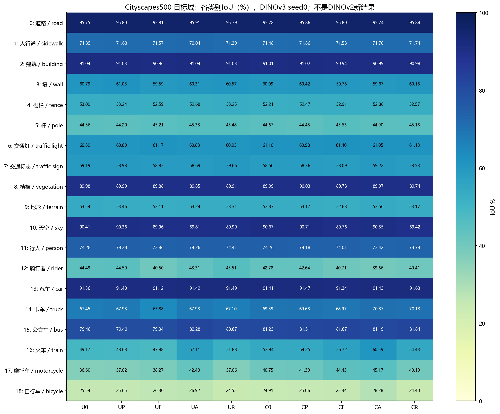
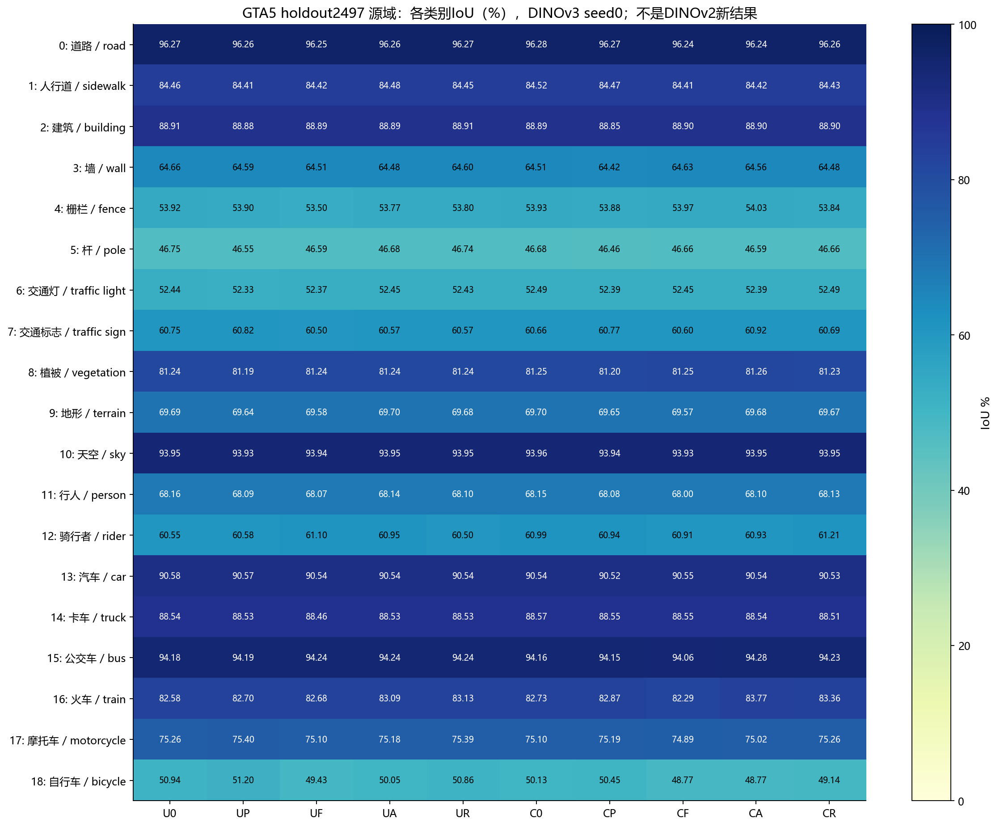

已完成的DINOv3十模型，seed0最终40000步；U关闭中心化，C开启。P=预测KL，F=Full CQE，A=Anchor-only，R=Residual-only。
IoU_c=TP_c/(TP_c+FP_c+FN_c)，mIoU是19类IoU均值。源域与目标域分开统计，ignore255不计入混淆矩阵。单训练种子点估计，不表示多种子显著性。

| trainId | 类别 | U0 | UP | UF | UA | UR | C0 | CP | CF | CA | CR |
|---|---|---|---|---|---|---|---|---|---|---|---|
| 0 | 道路 / road | 95.7550 | 95.8034 | 95.8127 | 95.9084 | 95.7925 | 95.7765 | 95.8606 | 95.8036 | 95.7390 | 95.8356 |
| 1 | 人行道 / sidewalk | 71.3526 | 71.6268 | 71.5733 | 72.0421 | 71.3875 | 71.4790 | 71.8561 | 71.5783 | 71.6970 | 71.7375 |
| 2 | 建筑 / building | 91.0372 | 91.0342 | 90.9551 | 91.0425 | 91.0282 | 91.0101 | 91.0160 | 90.9407 | 90.9946 | 90.9813 |
| 3 | 墙 / wall | 60.7895 | 61.0312 | 59.5920 | 60.3144 | 60.5706 | 60.0949 | 60.4168 | 59.7794 | 59.6749 | 60.1822 |
| 4 | 栅栏 / fence | 53.0930 | 53.2414 | 52.5919 | 52.6778 | 53.2487 | 52.2101 | 52.4724 | 52.9132 | 52.8558 | 52.5716 |
| 5 | 杆 / pole | 44.5646 | 44.2037 | 45.2075 | 45.3315 | 45.4790 | 44.6682 | 44.4538 | 45.6267 | 44.8973 | 45.1762 |
| 6 | 交通灯 / traffic light | 60.8911 | 60.8031 | 61.1675 | 60.8297 | 60.9265 | 61.0998 | 60.9751 | 61.3969 | 61.0466 | 61.1318 |
| 7 | 交通标志 / traffic sign | 59.1855 | 58.9847 | 58.8458 | 58.6868 | 59.6605 | 58.5044 | 58.3610 | 58.0929 | 59.2224 | 58.5349 |
| 8 | 植被 / vegetation | 89.9807 | 89.9853 | 89.8813 | 89.8517 | 89.9078 | 89.9896 | 90.0252 | 89.7814 | 89.9680 | 89.7376 |
| 9 | 地形 / terrain | 53.5379 | 53.4618 | 53.1073 | 53.2419 | 53.3116 | 53.3690 | 53.1735 | 52.6771 | 53.5604 | 53.1658 |
| 10 | 天空 / sky | 90.4144 | 90.3553 | 89.9606 | 89.8113 | 89.9873 | 90.6677 | 90.7063 | 89.7609 | 90.3455 | 89.4208 |
| 11 | 行人 / person | 74.2797 | 74.2255 | 73.8599 | 74.2553 | 74.4117 | 74.2559 | 74.1802 | 74.0052 | 73.4197 | 73.7356 |
| 12 | 骑行者 / rider | 44.4915 | 44.5852 | 40.5019 | 43.3130 | 45.5079 | 42.7800 | 42.6351 | 40.7135 | 39.6639 | 40.4068 |
| 13 | 汽车 / car | 91.3636 | 91.3982 | 91.1199 | 91.4244 | 91.4872 | 91.4140 | 91.4682 | 91.3364 | 91.4310 | 91.6276 |
| 14 | 卡车 / truck | 67.4519 | 67.9794 | 63.8761 | 67.9786 | 67.1045 | 69.3895 | 69.6808 | 68.9669 | 70.3664 | 70.1298 |
| 15 | 公交车 / bus | 79.4754 | 79.4031 | 79.3371 | 82.2839 | 80.6748 | 81.2263 | 81.5059 | 81.6671 | 81.1942 | 81.8434 |
| 16 | 火车 / train | 49.1700 | 48.6791 | 47.8844 | 57.1079 | 51.8807 | 53.9418 | 54.2455 | 56.7222 | 60.5890 | 54.4255 |
| 17 | 摩托车 / motorcycle | 36.5970 | 37.0210 | 38.2704 | 42.4045 | 37.0596 | 40.7535 | 41.3854 | 44.4336 | 45.1729 | 40.1888 |
| 18 | 自行车 / bicycle | 25.5422 | 25.6462 | 26.3031 | 26.9242 | 24.5484 | 24.9055 | 25.0622 | 25.4390 | 28.2783 | 24.4007 |
| 19类 mIoU | 65.2091 | 65.2352 | 64.7288 | 66.0753 | 65.4724 | 65.6598 | 65.7621 | 65.8755 | 66.3220 | 65.5386 | |

| trainId | 类别 | U0 | UP | UF | UA | UR | C0 | CP | CF | CA | CR |
|---|---|---|---|---|---|---|---|---|---|---|---|
| 0 | 道路 / road | 96.2731 | 96.2568 | 96.2547 | 96.2643 | 96.2664 | 96.2816 | 96.2683 | 96.2416 | 96.2431 | 96.2595 |
| 1 | 人行道 / sidewalk | 84.4589 | 84.4131 | 84.4154 | 84.4800 | 84.4488 | 84.5175 | 84.4675 | 84.4129 | 84.4193 | 84.4258 |
| 2 | 建筑 / building | 88.9085 | 88.8822 | 88.8921 | 88.8860 | 88.9124 | 88.8861 | 88.8508 | 88.8969 | 88.9005 | 88.8992 |
| 3 | 墙 / wall | 64.6565 | 64.5868 | 64.5116 | 64.4830 | 64.6009 | 64.5078 | 64.4228 | 64.6297 | 64.5634 | 64.4849 |
| 4 | 栅栏 / fence | 53.9242 | 53.9050 | 53.4983 | 53.7708 | 53.7996 | 53.9315 | 53.8788 | 53.9726 | 54.0267 | 53.8392 |
| 5 | 杆 / pole | 46.7469 | 46.5459 | 46.5915 | 46.6838 | 46.7383 | 46.6784 | 46.4574 | 46.6615 | 46.5857 | 46.6623 |
| 6 | 交通灯 / traffic light | 52.4409 | 52.3329 | 52.3740 | 52.4534 | 52.4269 | 52.4899 | 52.3883 | 52.4456 | 52.3919 | 52.4938 |
| 7 | 交通标志 / traffic sign | 60.7496 | 60.8224 | 60.4989 | 60.5741 | 60.5658 | 60.6590 | 60.7658 | 60.5971 | 60.9223 | 60.6919 |
| 8 | 植被 / vegetation | 81.2384 | 81.1932 | 81.2410 | 81.2448 | 81.2370 | 81.2473 | 81.2007 | 81.2541 | 81.2620 | 81.2316 |
| 9 | 地形 / terrain | 69.6893 | 69.6411 | 69.5833 | 69.6970 | 69.6797 | 69.7037 | 69.6471 | 69.5724 | 69.6848 | 69.6686 |
| 10 | 天空 / sky | 93.9534 | 93.9348 | 93.9436 | 93.9472 | 93.9530 | 93.9574 | 93.9354 | 93.9328 | 93.9492 | 93.9517 |
| 11 | 行人 / person | 68.1556 | 68.0895 | 68.0675 | 68.1409 | 68.1030 | 68.1524 | 68.0751 | 68.0015 | 68.0974 | 68.1258 |
| 12 | 骑行者 / rider | 60.5547 | 60.5832 | 61.1018 | 60.9546 | 60.5030 | 60.9866 | 60.9426 | 60.9138 | 60.9312 | 61.2111 |
| 13 | 汽车 / car | 90.5814 | 90.5686 | 90.5400 | 90.5448 | 90.5448 | 90.5402 | 90.5225 | 90.5450 | 90.5387 | 90.5303 |
| 14 | 卡车 / truck | 88.5439 | 88.5316 | 88.4555 | 88.5288 | 88.5330 | 88.5676 | 88.5531 | 88.5473 | 88.5367 | 88.5086 |
| 15 | 公交车 / bus | 94.1850 | 94.1896 | 94.2406 | 94.2402 | 94.2407 | 94.1568 | 94.1500 | 94.0634 | 94.2793 | 94.2316 |
| 16 | 火车 / train | 82.5751 | 82.6983 | 82.6836 | 83.0860 | 83.1262 | 82.7317 | 82.8739 | 82.2946 | 83.7694 | 83.3622 |
| 17 | 摩托车 / motorcycle | 75.2611 | 75.4026 | 75.0998 | 75.1758 | 75.3882 | 75.1047 | 75.1920 | 74.8913 | 75.0189 | 75.2608 |
| 18 | 自行车 / bicycle | 50.9405 | 51.2009 | 49.4281 | 50.0496 | 50.8649 | 50.1288 | 50.4467 | 48.7719 | 48.7723 | 49.1427 |
| 19类 mIoU | 73.8862 | 73.8831 | 73.7590 | 73.8529 | 73.8912 | 73.8542 | 73.8441 | 73.7182 | 73.8365 | 73.8411 | |